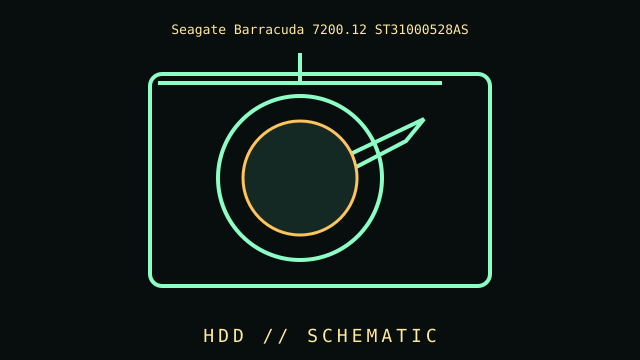

[ SATA DESKTOP DRIVES // IDENTIFIED COMPONENT ]
Seagate Barracuda 7200.12 ST31000528AS
1 TB 7200 RPM SATA HDD, 2009 generation. This entry records a distinct product or well-defined family; differences among revisions and similarly named models are called out below.

MODEL IDENTIFICATION: Match the full model/part number, revision, and region to the item label and its manufacturer documentation. Where a family has multiple revisions, specifications below are not universal across the family.
Recorded specifications
| Cataloged part | Seagate Barracuda 7200.12 ST31000528AS |
|---|---|
| Era / family | 1 TB 7200 RPM SATA HDD, 2009 generation |
| Key specifications | 1 TB; 3.5-inch; SATA 3 Gb/s; 7200 RPM; 32 MB cache for this model. |
| Interface / fit | Confirm controller firmware, sector presentation and exact model; check SMART and do not trust old media as sole copy. |
| Variants / identification | Firmware revision and manufacturing lot matter; family-level 7200.12 specifications do not apply to every capacity. |
| Archive record | Record full part number, hardware revision, serial/date code, firmware/BIOS, accessories, physical condition, and the documentation revision used for verification. |
Compatibility and handling
- Confirm the complete part number, connector signal/pinout, supported host, dimensions, power, firmware and operating-system requirements before use.
- Inspect for corrosion, cracked parts, bent pins, damaged insulation, failing bearings, leaking cells, or prior repair. Avoid powering unidentified or damaged hardware.
- For compatibility claims, cite a specific manual, CPU support list, interface standard, or tested host configuration; physical fit alone is insufficient.
- Record measurements with the test setup and instrument conditions; distinguish vendor maximums from measured or sustained results.
Model notes
Confirm controller firmware, sector presentation and exact model; check SMART and do not trust old media as sole copy.
Firmware revision and manufacturing lot matter; family-level 7200.12 specifications do not apply to every capacity.
Sources & further reading
- Manufacturer / standards documentation — Seagate Barracuda 7200.12 ST31000528ASReference supplied for this specific model or standards family; verify full revision against the nameplate/manual.
- Manufacturer / standards documentation — Seagate Barracuda 7200.12 ST31000528ASReference supplied for this specific model or standards family; verify full revision against the nameplate/manual.
Source links may describe a product family, not the exact board revision or region. The full model-specific manual/specification takes precedence.